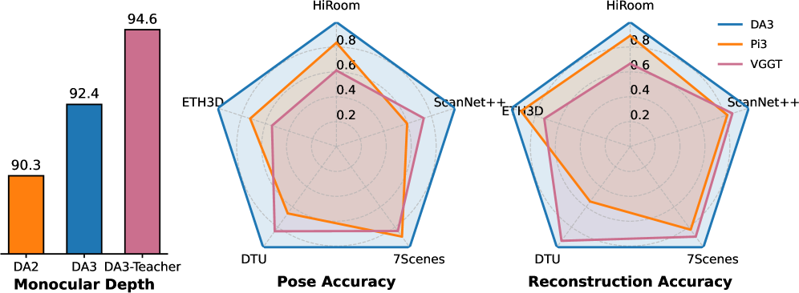
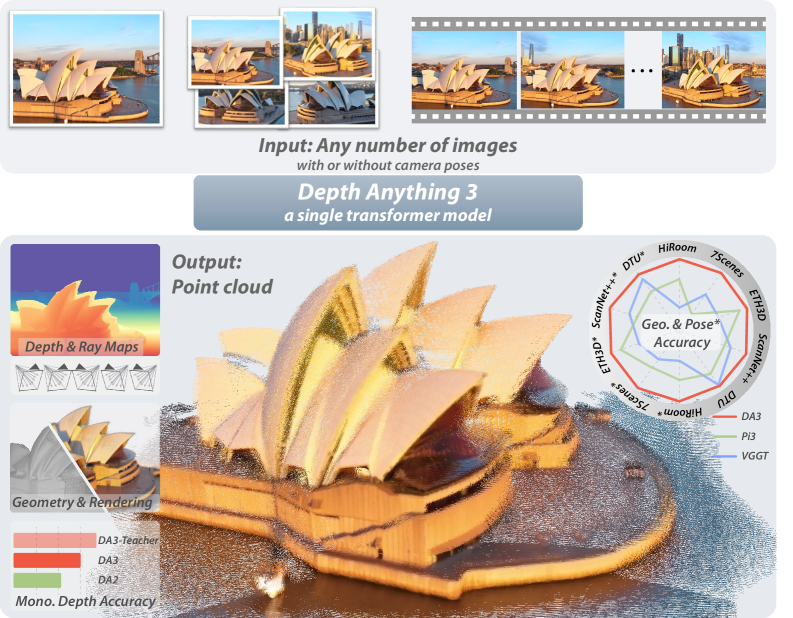
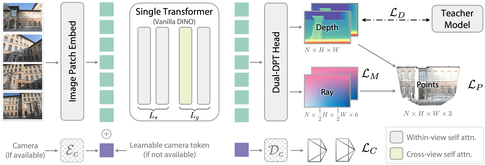
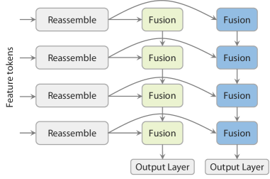
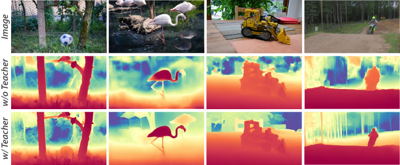
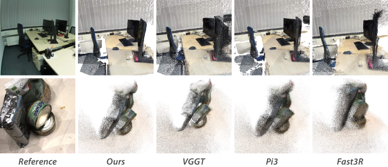
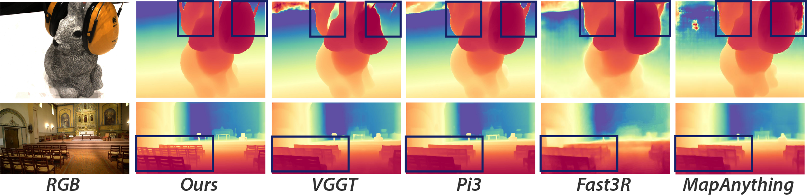
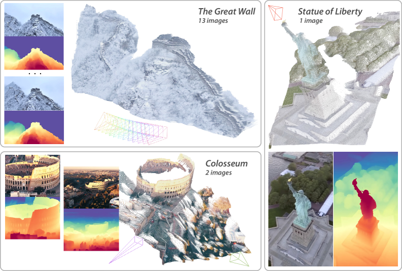

一句话概括:3D 视觉各任务(单目深度、SfM、MVS、SLAM)概念上只差"输入视角数"一个变量,却长期各立专用模型。DA3 回到更根本的目标——从任意数量、位姿可选的视觉输入恢复 3D 视觉空间——并用极简建模给出肯定答案:① 一个未经架构特化的 plain transformer(原版 DINOv2 预训练权重直接接入)足够;② depth-ray 这一个预测目标(深度图 + 每像素 6 维光线)足够,不需要 DUSt3R 式 point map、也不需要 VGGT 式 pose+point+depth 多任务。配套 teacher-student 训练(合成数据训单目 teacher → RANSAC 对齐稀疏 GT → 教多视图学生),在自建 Visual Geometry Benchmark 上 pose 精度超 VGGT 35.7%、几何精度超 23.6%,单目深度还反超 DA2。


单目深度、SfM、MVS、SLAM 本质共享"从视觉恢复 3D"这一目标,此前统一模型的尝试(如 VGGT / DUSt3R / MASt3R / Fast3R)有两个系统性问题:架构高度定制(双流 transformer、专门的几何 token 设计)导致吃不满大规模预训练视觉模型的红利;多任务目标堆叠(pose + point map + depth + 置信度……)让损失设计变成经验艺术,且不同来源 GT 的精度差异(真实 LiDAR 稀疏、合成数据有偏差)进一步拖累联合优化。
VGGT 式双 transformer 设计在公平参数对比下仅达 DA3 方案的 79.8% 性能(消融表 7-b),作者归因:VGGT 三分之二 block 未预训练,而 DA3 整个 backbone 都是 DINOv2 预训练权重。架构越定制,预训练迁移越差。
消融表 6:DUSt3R 式 "depth+pcd+cam" 与 "depth+cam" 在 5 个数据集上稳定输给最小 "depth+ray" 组合(HiRoom Auc3 48.7 vs 10.8,近 4 倍差距)。pose 作为辅助监督反而拖累几何。
真实深度来源(LiDAR/COLMAP)稀疏且有噪声(论文图 4 示例),直接在混合数据上训统一模型会被标签质量拖死。DA3 的答案是 teacher 伪标签 + RANSAC 对齐原始稀疏 GT,兼顾细节与几何正确性。
| 符号 | 含义 | 形状/取值 |
|---|---|---|
| $N_v$ | 输入视角数(单目=1,训练采样 [2,18]) | int |
| $D_i$ / $M_i$ | GT 深度图 / GT ray map($M=(t,d)$,原点+方向) | $H{\times}W$ / $H{\times}W{\times}6$ |
| $\mathbf{r}=(\mathbf{t},\mathbf{d})$ | 每像素光线;$\mathbf{d}=R K^{-1}p$ 不归一化,保留投影尺度 | $\mathbb{R}^3\times\mathbb{R}^3$ |
| $v_i$ | 相机 9 维向量(平移 3、四元数 4、FOV 宽高 2) | $\mathbb{R}^{9}$ |
| $E_c$ | camera token 编码 MLP + 4 层 transformer | 源码 9→dim/2→dim(cam_enc.py:44-54) |
| alt_start | 开始交替注意力的层索引(其后奇数层为 global) | small/base=4,large=8,giant=13 |
| $H=KR$ | ray map 解相机的单应(标准相机光线→相机光线) | DLT + RQ 分解 |
| $D_c$ | 深度置信度(expp1 激活 ≥1,源码) | 与深度同尺寸 |
| $\widetilde D$ / $D^{T\to M}$ | teacher 相对深度 / RANSAC scale-shift 对齐后的监督 | $(\hat s,\hat t)=\arg\min\sum m_p(s\widetilde D_p+t-D_p)^2$ |

| 输入 | 算子 | 输出 |
|---|---|---|
| 像素 $p=(u,v,1)$、深度 $D(p)$、内参 $K$、外参 $(R,t)$ | $\mathbf{X}(p)=R\big(D(p)K^{-1}p\big)+t$ | 世界系 3D 点 $\mathbb{R}^3$ |
| 像素 $p$ | $\mathbf{d}=R K^{-1}p$(不归一化) | 光线方向,模长保留投影尺度 |
| 逐像素光线 | $\mathbf{r}=(\mathbf{t},\mathbf{d})$ 堆叠 | ray map $M\in\mathbb{R}^{H\times W\times 6}$ |
| 预测的 $\widehat D$、$\widehat M$ | $\mathbf{P}=\mathbf{t}+\widehat D\cdot\mathbf{d}$ | 点云(逐元素,无需任何匹配) |
机制解释:标准相机($K_I=I$)的光线就是像素坐标 $p$ 本身,相机系光线与标准光线相差单应 $H=KR$——"估计相机"于是变成"两组光线之间的单应估计",标准最小二乘问题。平移由光线原点(深度通道)直接给出,这是 depth-ray 表示最妙之处:位姿的平移分量与几何深度共享监督信号,网络学深度时被迫把相机位置也学对。源码该路径做了置信度加权 RANSAC(utils/ray_utils.py:435-523)。
dualdpt.py:146,249-258)。ray_utils.py:495-498)。ray_utils.py:21-91);内参按"图像宽=2"归一化约定还原(da3.py:195-198)。use_ray_pose=False,走 camera head:最后一层 camera token → 2 层 MLP → 三分支回归 $t$(3)/$q$(4)/$fov$(2)(cam_dec.py:29-31)。主点硬编码图像中心(transform.py:55-56)【论文未写】。ray map 由 GT 相机解析生成(式 1 的逆过程),监督为 $L_M$(ray map ℓ1,见 §8);pose 本身不再是独立回归目标——这正是"depth-ray 单目标"的含义。
| 组件 | 结构(源码) | 出处 |
|---|---|---|
| backbone | 原版 DINOv2 vision transformer(vits/vitb/vitl/vitg),patch=14 硬编码,预训练 img_size=518 | dinov2.py:22-64,da3.py:64 |
| local/global 交替 | 层索引 ≥ alt_start 且为奇数 → global(全部视图 token 拼成一条序列做标准 full attention,无 mask);否则 local(每视图独立) | vision_transformer.py:333-339,351-370 |
| camera token | 可学习参数 $(1,2,E)$(ref/src 两个);第 alt_start 层替换每视图 0 号位;已知位姿时换成 cam_enc 输出 | vision_transformer.py:163,323-331 |
| 参考视图选择 | 视图数 ≥3 且无外部 cam token 时,基于 cls 特征选参考视图排到第 0 位(默认 saddle_balanced;评测固定 first) | vision_transformer.py:314-321,reference_view_selector.py:29-112 |
| 双流拼接(cat_token) | 输出特征 = local 流与 global 流通道维拼接 → head dim_in = 2×embed | vision_transformer.py:342,383-398 |
| RoPE 双坐标 | local 层用各视图真实坐标;global 层用全视图共享坐标(pos_nodiff,不注入视图序号差异) | vision_transformer.py:282-298,308-312 |
该模块无直接监督——由 Dual-DPT 头的 depth/ray 损失经反向传播端到端驱动;预训练 DINOv2 权重提供初始化先验。
vision_transformer.py 全文)。"no architectural modification"应理解为"block 级无新算子",token 调度层面的工程含量不低——复现或改造时别被这句话误导。
| 级 | 算子 | 输出形状 | 出处 |
|---|---|---|---|
| 输入 | backbone 4 个中间层特征(双流拼接后 dim_in = 2×embed) | 4 × $[B,N_v,\cdot,H/14,W/14]$ | dualdpt.py:76 |
| 投影 | LayerNorm → 1×1 conv → 空间重采样(×4/×2/×1/÷2) | 对齐到统一分辨率 | dualdpt.py:86-97 |
| depth 分支 | 独立 fusion 链 refineNet1-4(注释明确 no sharing)→ conv 逐级降维 → exp 激活 | 2 通道:深度 + 置信度(conf = expp1 ≥ 1) | dualdpt.py:103-118,244-247,341-364 |
| ray 分支 | 独立 fusion 链 + 4 级金字塔(各级独立 5 层 conv neck),只返回末级 | 7 通道:6 维光线 + 1 维置信度 | dualdpt.py:121-124,146,249-258,321-330 |
与论文"两分支共享 reassembly 模块、仅最终 fusion 不同"(图 3)对应:源码中两分支的 projection/重采样结构相同,但 refinenet 链完全独立。深度为 exp 激活直接回归深度(非 disparity)(dualdpt.py:50,349-350)。
chunk_size=8)省显存。
统一几何模型的训练数据横跨合成(Hypersim、TartanAir、Objaverse……)与真实(ARKitScenes、ScanNet++、WildRGBD……),真实深度噪声大、不完整(论文图 4)。直接用混合 GT 训练,标签质量差异会把多视图一致性学坏。
teacher 相对深度 $\widetilde D$ 与可用的稀疏/噪声 GT(COLMAP 或主动传感器深度)对齐后作为监督——细节与完整性来自 teacher,几何正确性由稀疏 GT 锚定。训练前 120k 步用 GT 监督,之后切换 teacher 标签(§3.4)。
主模型监督链:GT 深度(前 120k 步)→ teacher 对齐伪深度(之后);metric/mono 变体走各自蒸馏链。消融(表 7-e)显示 teacher 在合成占优的 HiRoom 上几乎必要(39.2→11.2 Auc3),真实数据上 gains 不一——teacher 不是免费的午餐。

总损失(§3.3):所有 GT 信号先用公共尺度因子归一化(有效重投影 point map 的均值 ℓ2 范数);所有项基于 ℓ1。
| 损失项 | 公式/形式 | 权重 | 作用 |
|---|---|---|---|
| $\mathcal{L}_D$ 深度 | 带置信度的尺度不变 ℓ1:$\frac{1}{Z_\Omega}\sum_{p\in\Omega} m_p\,(D_{c,p}|\widehat D_p-D_p|-\lambda_c\log D_{c,p})$ | 1 | 主深度监督(前 120k 步 GT,之后 teacher 标签) |
| $\mathcal{L}_M$ ray map | ℓ1($\widehat M$, $M$) | 1 | 光线监督;同时隐式监督相机(平移+旋转+内参) |
| $\mathcal{L}_P$ 重投影一致性 | ℓ1($\widehat D\odot\mathbf{d}+\mathbf{t}$, GT point map $\mathbf{P}$) | 1 | 深度×光线组合出的点云与 GT 对齐,钉死跨视图一致性 |
| $\mathcal{L}_C$ 相机 | ℓ1(camera head 输出 $\widehat{\mathbf{c}}$, GT 相机 9 维向量) | $\beta=1$ | 轻量 camera head 的直接监督(可选输出) |
| $\mathcal{L}_{grad}$ 深度梯度 | $\|\nabla_x\widehat D-\nabla_x D\|_1+\|\nabla_y\widehat D-\nabla_y D\|_1$(水平/垂直有限差分) | $\alpha=1$ | 保持锐利边缘与平面平滑 |
| 配置 | backbone | out_layers | alt_start | head dim_in | README 参数量 | HF 许可 |
|---|---|---|---|---|---|---|
| DA3-Small | vits(E=384,L=12,H=6) | [5,7,9,11] | 4 | 768 | 0.08B | Apache 2.0 |
| DA3-Base | vitb(E=768,L=12,H=12) | [5,7,9,11] | 4 | 1536 | 0.12B | Apache 2.0 |
| DA3-Large(-1.1) | vitl(E=1024,L=24,H=16) | [11,15,19,23] | 8 | 2048 | 0.35B | CC BY-NC 4.0 |
| DA3-Giant(-1.1) | vitg(E=1536,L=40,H=24,SwiGLU) | [19,27,33,39] | 13 | 3072 | 1.15B | CC BY-NC 4.0 |
| DA3Metric-Large | vitl(alt_start=-1,cat_token 关) | [4,11,17,23] | -1 | 1024 | 0.35B | Apache 2.0 |
| DA3Mono-Large | vitl(同关) | [4,11,17,23] | -1 | 1024 | 0.35B | Apache 2.0 |
| DA3NESTED-GIANT-LARGE(-1.1) | NestedDepthAnything3Net (anyview=giant + metric=large) | — | — | — | 1.40B | CC BY-NC 4.0 |
mono/metric 变体的实现方式印证"单模型覆盖":配置开关把 alt_start/qknorm_start/rope_start 全设 -1、cat_token=False,backbone 即退回原版 DINOv2 行为(无 camera token、无跨视图注意力),head 换单头 DPT + sky 头——同一份代码、同一个权重族,只是配置不同。-1.1 后缀为修复训练 bug 后重训版,官方推荐(README.md:211)。
| 项 | 值 | 出处 |
|---|---|---|
| 主模型训练 | 128×H100,200k 步,8k warmup,peak lr 2×10⁻⁴;消融设定 ViT-L/≤10 视图/32×H100/约 4 天,全量 Giant 约 10 天 | §3.4,§7.2 |
| base resolution | 504×504(可被 2,3,4,6,9,14 整除,兼容多种长宽比);8 种分辨率随机采样(504×504/504×378/504×336/504×280/336×504/896×504/756×504/672×504) | §3.4 |
| 视角数/batch | 504×504 时视角数 [2,18] 均匀采样;batch 动态调整使每步 token 数近似恒定 | §3.4 |
| 监督切换 | 120k 步 GT → teacher 标签;pose conditioning 以 0.2 概率随机激活 | §3.4 |
| metric 模型 | AdamW,encoder lr 5e-6,decoder lr 5e-5;batch 64,160K 迭代;5% 概率随机旋转 90/270°;canonical focal f^c=300;20% 概率用原始 GT 标签 | §4.4 |
| 训练数据 | 22 个数据源(表 1):合成 8 个(AriaDigitalTwin 237、AriaSyntheticENV 99,950、HyperSim 344、MegaSynth 6,049、MvsSynth 121、Objaverse 505,557、OmniObject 5,885、OmniWorld 1,039、PointOdyssey 44、ReplicaVMAP 17、SceneNetRGBD 16,866、TartanAir 355、vKitti2 50、Trellis 557,408——合计以合成占绝对多数);LiDAR 3 个(ArkitScenes 4,388、ScanNet++ 230、WildRGBD 23,050);COLMAP 4 个(BlendedMVS 503、Co3dv2 30,616、DL3DV 6,379、MapFree 921、MegaDepth 268) | 表 1 |
api.py:145,input_processor.py:44-57);外参先归一化到"第 0 帧参考系 + 平移按中位距离缩放"(api.py:327-339)。da3.py:127,139,cam_dec.py:37-40)——几何量对精度敏感。da3.py:155-179,418-442)【论文未写】。use_ray_pose=True 走 ray head 解位姿(§4),更准但更慢,默认 False 走 camera head;DA3NESTED-GIANT-LARGE-1.1 的 Auc3 对比(HiRoom/ETH3D/DTU/7Scenes/ScanNet++):ray_head 84.4/52.6/93.9/29.5/89.4 vs cam_head 80.3/48.4/94.1/28.5/85.0——除 DTU 外 ray head 全面更优,且 1.1 版比论文表 2 的原版(80.3/48.4/94.1/28.5/85.0)无回退。HF_ENDPOINT=https://hf-mirror.com(README 明示,国内可用)。本节即 InfiniSplat v2 反复提到的 "DA3-GS" 基线出处。两层事实要分清:① 论文 §5描述了该技术(冻结 backbone + 加一个 DPT head 即得前馈 3DGS);② 官方发布权重已内置高斯头——README 把 "3D Gaussian Estimation: Directly predicts 3D Gaussians" 列为 DA3 主系列一等能力,装 gsplat(钉死 commit 0b4dddf)后 model.inference() 直接输出逐像素 3DGS,可导出 ply / gs / gs_video 格式,无需任何额外训练。
| 规格 | 🎨 GS 头 | 许可 | 备注 |
|---|---|---|---|
| DA3-GIANT-1.1 / DA3-GIANT | ✅ 内置 | CC BY-NC 4.0 | 38 维 GS 头(SH2),见源码审计 §10 |
| DA3NESTED-GIANT-LARGE-1.1 / 原版 | ✅ 内置 | CC BY-NC 4.0 | InfiniSplat v2 用的即 1.1 版 |
| DA3-LARGE / BASE / SMALL | ❌ 无 | Large 为 CC BY-NC,Base/Small 为 Apache 2.0 | 只有深度/位姿,要 3DGS 需自己接头 |
| DA3METRIC-LARGE / DA3MONO-LARGE | ❌ 无 | Apache 2.0 | 单目专用 |
选型含义:带 GS 头的权重全部落在 CC BY-NC 许可区——"直出 3DGS" 与 "可商用" 不可兼得,商用场景只能拿 Apache 2.0 的 Base/Small 深度+位姿自己接 GS 头(或谈授权)。另注意 Model Cards 明示:-1.1 模型在街景上表现显著更好(修复训练 bug 后重训),选型一律优先 -1.1。
| 维度 | Pose-Conditioned(§5.1) | Pose-Adaptive(§5.2) |
|---|---|---|
| 输入设定 | 12 个 context views + GT 位姿 | 任意视角数、可选位姿、可变分辨率(in-the-wild) |
| GS 输出 | 每像素 camera 空间 $\{\sigma,q,s,c\}$(RGB 颜色) | 所有参数在局部 camera 空间预测 + 额外 depth offset;颜色改球谐(view-dependent) |
| 位姿利用 | 给定 pose 直接光栅化 | 有 pose → Umeyama 尺度对齐 + unproject 到世界系;无 pose → 直接用预测 pose |
| 训练 | 渲染 photometric(MSE + LPIPS)+ 观察视图深度 scale-shift-invariant L_D;沿用 teacher-student | 冻结 backbone、只训 GS-DPT;可变分辨率 × 可变视图数(高分辨率配少视图)稳定训练 |
| 方法 | DL3DV (140) | Tanks&Temples (6) | MegaDepth (19) |
|---|---|---|---|
| pixelSplat | 16.55 / 0.456 / 0.480 | 13.81 / 0.347 / 0.558 | 13.87 / 0.367 / 0.561 |
| MVSplat | 18.13 / 0.559 / 0.393 | 14.81 / 0.391 / 0.508 | 14.67 / 0.398 / 0.533 |
| DepthSplat | 19.24 / 0.620 / 0.322 | 15.80 / 0.474 / 0.418 | 15.90 / 0.471 / 0.450 |
| Fast3R(换 backbone) | 19.30 / 0.604 / 0.320 | 16.24 / 0.478 / 0.409 | 16.43 / 0.493 / 0.421 |
| MV-DUSt3R(换 backbone) | 20.01 / 0.645 / 0.294 | 17.04 / 0.529 / 0.370 | 16.20 / 0.484 / 0.437 |
| VGGT(换 backbone) | 20.96 / 0.697 / 0.253 | 17.18 / 0.550 / 0.347 | 16.45 / 0.500 / 0.417 |
| DA3-GS(原文行名 DAv3) | 21.33 / 0.711 / 0.241 | 18.10 / 0.578 / 0.311 | 17.89 / 0.561 / 0.351 |
两个关键发现(§7.5):① 为 NVS 微调几何基础模型显著优于高度专用的任务特定模型;② 几何重建能力与 NVS 性能直接正相关——这是"选几何 backbone 比设计 NVS 网络更重要"的实证,也是 InfiniSplat v2 "冻结几何只做属性"路线的前提论据。所有对比模型按统一协议重训(DL3DV-10K,8×A100,200K 步,batch 1,pixelSplat 100K)。
v2 的消融表 2(w/o G)证明:DA3-GS 式"几何+属性联合优化"会让网络移动点位置去补偿属性误差,渲染指标短期变好、几何退化(ETH3D LPIPS 0.5204→0.4339,冻结后 -16.6%)。v2 的"冻结几何分支 + 位置钉死"正是对 DA3-GS 这一缺陷的直接回应——几何基座用同一 DA3,差别全在"属性怎么学"。详见 InfiniSplat v2 笔记 §14.2。
自建 Visual Geometry Benchmark:5 数据集 89 场景(HiRoom 29 / ETH3D 11 / DTU 22 / 7Scenes 7 / ScanNet++ 20);位姿指标为 AUC(由 RRA/RTA 的 min 在阈值 3°/30° 下积分),重建指标 DTU 报 CD(mm)、其余报 F1;渲染为 PSNR/SSIM/LPIPS(见 §11.2)。
| 方法 | 参数 | HiRoom | ETH3D | DTU | 7Scenes | ScanNet++ |
|---|---|---|---|---|---|---|
| DUSt3R | 0.57B | 17.6 / 54.3 | 4.30 / 27.3 | 4.00 / 74.3 | 6.90 / 61.6 | 8.10 / 33.9 |
| Fast3R | 0.65B | 25.9 / 77.0 | 8.10 / 44.4 | 9.50 / 79.1 | 19.0 / 78.6 | 17.9 / 72.5 |
| MapAnything | 0.56B | 17.9 / 82.8 | 19.2 / 77.4 | 6.50 / 72.7 | 12.6 / 79.7 | 20.2 / 84.1 |
| Pi3 | 0.96B | 67.0 / 94.8 | 35.2 / 87.3 | 62.5 / 94.9 | 25.5 / 86.3 | 50.7 / 92.1 |
| VGGT | 1.19B | 49.1 / 88.0 | 26.3 / 80.8 | 79.2 / 99.8 | 23.9 / 85.0 | 62.6 / 95.1 |
| DA3-Giant | 1.10B | 80.3 / 95.9 | 48.4 / 91.2 | 94.1 / 99.4 | 28.5 / 86.8 | 85.0 / 98.1 |
| DA3-Large | 0.36B | 58.7 / 94.2 | 32.2 / 86.9 | 70.2 / 96.7 | 29.2 / 86.6 | 60.2 / 94.7 |
| DA3-Base | 0.11B | 19.0 / 83.2 | 15.1 / 74.6 | 60.1 / 95.9 | 20.1 / 82.9 | 25.1 / 83.4 |
| DA3-Small | 0.03B | 9.49 / 75.2 | 8.59 / 62.1 | 30.6 / 91.2 | 14.0 / 78.7 | 10.9 / 71.9 |
读法:DA3-Giant 几乎全项最佳,唯一例外 DTU 的 Auc30(VGGT 99.8 > 99.4);Auc3 相对所有对手至少 +8%;ScanNet++ Auc3 相对第二名 VGGT 提升 33%。0.36B 的 DA3-Large 在 10 项设置里的 5 项超过 1.19B 的 VGGT(ETH3D 尤其突出)——小模型打大模型的效率收益。
| 方法 | 参数 | HiRoom w/o/w | ETH3D w/o/w | DTU w/o/w | 7Scenes w/o/w | ScanNet++ w/o/w |
|---|---|---|---|---|---|---|
| DUSt3R | 0.57B | 30.1 / 39.5 | 19.7 / 18.8 | 7.60 / 7.97 | 26.6 / 39.8 | 18.9 / 27.3 |
| Fast3R | 0.65B | 40.7 / 48.2 | 38.5 / 50.3 | 6.88 / 8.20 | 41.0 / 49.8 | 37.1 / 53.7 |
| MapAnything | 0.56B | 32.4 / 69.2 | 54.8 / 71.9 | 7.91 / 3.97 | 44.8 / 55.2 | 39.4 / 71.3 |
| Pi3 | 0.96B | 75.8 / 85.0 | 72.7 / 80.6 | 3.28 / 1.72 | 44.2 / 57.5 | 63.1 / 73.3 |
| VGGT | 1.19B | 56.7 / 70.2 | 57.2 / 66.7 | 2.05 / 1.44 | 47.9 / 51.4 | 66.4 / 70.7 |
| DA3-Giant | 1.10B | 85.1 / 95.6 | 79.0 / 87.1 | 1.85 / 1.85 | 53.5 / 56.5 | 77.0 / 79.3 |
| DA3-Large | 0.36B | 69.5 / 87.1 | 65.8 / 75.2 | 2.08 / 1.23 | 56.3 / 49.2 | 67.9 / 75.7 |
| DA3-Base | 0.11B | 25.9 / 71.4 | 49.5 / 66.7 | 2.87 / 2.36 | 49.9 / 50.6 | 47.2 / 67.8 |
| DA3-Small | 0.03B | 18.3 / 52.2 | 41.6 / 63.4 | 5.83 / 2.49 | 41.0 / 46.8 | 32.3 / 53.8 |
读法:DA3-Giant 全部 5 个 pose-free 设定 SOTA;有 pose 时多数数据集仍有增益,7Scenes 例外(视频设定已饱和);pose-conditioned 下模型尺寸带来的增益小于 pose-free——说明 pose 估计比深度估计更需要大模型。
| 方法 | KITTI | NYU | SINTEL | ETH3D | DIODE | Rank |
|---|---|---|---|---|---|---|
| DA2 | 94.6 | 97.9 | 77.2 | 86.5 | 95.2 | 2.60 |
| VGGT | 91.7 | 97.9 | 67.9 | 97.5 | 95.3 | 3.75 |
| DA3 | 95.3 | 97.4 | 75.5 | 98.6 | 95.4 | 2.20 |
| Teacher | 97.2 | 97.9 | 81.4 | 99.8 | 96.6 | 1.00 |
单目学生(表 10)全面超 DA2(ETH3D +10% 以上);metric 学生(表 11)ETH3D δ1=0.917 远超 UniDepthv2 的 0.863、SUN-RGBD AbsRel 0.105 最佳。



| 预测目标 | HiRoom | ETH3D | DTU | 7Scenes | ScanNet++ |
|---|---|---|---|---|---|
| depth + pcd + cam | 9.1 / 12.8 | 19.0 / 60.4 | 42.3 / 4.918 | 20.8 / 43.4 | 22.0 / 43.0 |
| depth + cam | 10.8 / 16.5 | 9.9 / 48.0 | 23.3 / 5.316 | 13.0 / 38.5 | 13.3 / 41.0 |
| depth + ray | 48.7 / 60.3 | 25.5 / 65.4 | 46.5 / 3.919 | 24.0 / 46.5 | 35.5 / 53.4 |
| depth + ray + cam(最终) | 37.2 / 45.4 | 22.3 / 59.4 | 56.3 / 3.066 | 25.7 / 45.6 | 34.1 / 56.5 |
读法:最小 depth+ray 在所有数据集与指标上稳定优于 depth+pcd+cam 与 depth+cam;HiRoom Auc3 48.7 vs 10.8 近 4 倍差距。加 cam head 无进一步增益但开销可忽略(约 backbone 计算量 0.1%),最终采用 depth+ray+cam。这一表是"单目标"论断的核心证据。
| 变体 | HiRoom | ETH3D | DTU | 7Scenes | ScanNet++ |
|---|---|---|---|---|---|
| a. 本文架构(交替) | 39.2 / 47.0 | 21.0 / 55.4 | 45.8 / 3.82 | 26.2 / 47.6 | 30.3 / 51.1 |
| b. VGGT 式双 transformer | 3.72 / 14.5 | 2.31 / 27.4 | 1.38 / 6.93 | 0.97 / 21.4 | 2.03 / 12.2 |
| c. Full Alt.(全交替) | 24.7 / 29.3 | 13.1 / 51.9 | 44.6 / 4.23 | 21.1 / 48.6 | 27.7 / 47.5 |
| d. w/o Dual DPT(两独立 DPT) | 5.59 / 11.5 | 13.6 / 33.4 | 21.7 / 5.14 | 14.2 / 49.4 | 26.5 / 46.6 |
| e. w/o Teacher | 11.2 / 16.0 | 16.2 / 57.6 | 52.5 / 3.29 | 23.3 / 40.3 | 26.2 / 47.7 |
| f. w/o Pose Cond.* | 65.8 | 63.2 | 3.65 | 58.4 | 62.8 |
| g. w/ Pose Cond.* | 73.8 | 70.9 | 2.14 | 46.0 | 65.7 |
读法:① b 全面崩(仅达 a 的 79.8%)——"定制架构 + 三分之二 block 未预训练"的代价;② 交替比全交替优(partial alternation 更优);③ Dual-DPT 不可拆;④ teacher 对 HiRoom(合成 GT 细节丰富)几乎必要,真实数据集 gains 不一;⑤ pose conditioning 在 7Scenes 反而更差(46.0 vs 58.4),与正文"各配置一致优于"的说法矛盾——这是本笔记复核发现的一处原文数字与结论不一致⚠️【待核实】可能对应不同评测协议,原文未解释。
V3 数据 + 多分辨率策略最佳(δ1 0.938 / AbsRel 0.072 / SqRel 0.452);depth 几何表示最优(优于 disparity/pointmap);full teacher loss 最优。
| 方法 | 年份 | 输入假设 | 场景表示 | 监督信号 | 训练数据 | 训练时长 | 推理耗时 | 显存 | 关键指标 | 开源 |
|---|---|---|---|---|---|---|---|---|---|---|
| DUSt3R | 2023 | 图像对 | point map | GT point map | 混合 | — | — | — | ETH3D Auc3 4.30 | ✅ |
| Fast3R | 2025 | 任意视角 | point map | DUSt3R 蒸馏 | — | — | — | — | ETH3D Auc3 8.10 | ✅ |
| MapAnything | 2025 | 任意视角(全景为主) | depth + pose | 多任务 | — | — | — | — | ETH3D Auc3 19.2 | ✅ |
| Pi3 | 2025 | 单/多视角 | depth + pose | 多任务 | — | — | — | — | ETH3D Auc3 35.2 | ✅ |
| VGGT | 2024 | 任意视角 | depth + point map + pose + 置信度 | 多任务联合 | 混合(2/3 block 未预训练) | — | 34.1 FPS(32 图,A100) | 单卡 400-500 图 | ETH3D Auc3 26.3;ScanNet++ F1 66.4 | ✅ |
| DA3-Giant | 2025.11 | 任意视角,位姿可选 | depth + ray(单目标) | GT + teacher 伪深度 | 22 数据源(合成为主) | 128×H100,200k 步(约 10 天级) | 37.6 FPS(32 图,A100) | 单卡 900-1000 图;流式可 <12GB | ETH3D Auc3 48.4;ScanNet++ F1 77.0 | ✅(权重+推理代码;训练闭源) |
注:DUSt3R/Fast3R/MapAnything/Pi3 的"训练数据/时长/显存"论文未逐项报告,标 —;对比数值均引自 DA3 论文表 2/表 3/表 8 同一协议。
| 范式 | 代表方法 | 核心先验 | 局限 |
|---|---|---|---|
| point map 统一 | DUSt3R → MASt3R → Fast3R | 两图点云回归 | 深度与相机耦合,监督信号互相污染 |
| 多任务统一 | VGGT → Pi3 → MapAnything | pose+depth+置信度联合 | 架构定制、预训练利用率低 |
| 极简统一 | DA3 | 预训练 ViT + depth-ray 单目标 | 静态场景;大规格许可非商用 |
| 几何基座 + 属性头 | DA3-GS → AnySplat → InfiniSplat v2 | 冻结 DA3 几何、只学渲染属性 | 几何错误不可修(见 v2 笔记 §16) |
定位一句话:DA3 是"几何基础模型"这一定位的当前正典——它把 VGGT 开辟的路线收敛到最简形态,并以"NVS 性能与几何精度直接正相关"的实证(表 5 + §7.5)奠定了后续"冻结几何、专学属性"整条范式线的合法性。
| 项 | 成本 | 说明 |
|---|---|---|
| 推理 | Large 78 FPS / Giant 38 FPS(32 图,A100) | 表 8;流式 8.51 FPS @ A100 |
| 复现训练 | 不可行 | 无训练代码;128×H100 200k 步 |
| 微调 | 低(只训 head 可行,如 DA3-GS 冻结 backbone) | 官方 DA3-GS 即此模式;参考 InfiniSplat v2 的"冻结几何 + 属性头"做法 |
| 商用许可 | Large/Giant/Nested 禁商用 | Small/Base/Metric/Mono Apache 2.0 |
问题:论文宣称 vanilla DINOv2 零修改,但源码里 local/global 交替、camera token 注入、参考视图选择、cat_token 双流拼接、qk_norm、RoPE 双坐标全在 vision_transformer.py。后果:① DA3 升级即破坏下游兼容——InfiniSplat v2 不得不把 DA3 钉死 commit 41736238 并打两处 monkey-patch(v2 笔记 §11);② 想"换个更强预训练 backbone"时,这些调度代码都要重做。改进建议:把 token 调度逻辑抽象成与 backbone 解耦的 adapter;论文措辞改为 "block-level zero modification"。
问题:Apache 2.0 的 Small/Base(0.08B/0.12B)性能与 CC BY-NC 的 Large/Giant(0.35B/1.15B)差距悬殊——表 2 中 ETH3D Auc3 Base 15.1 vs Large 32.2 vs Giant 48.4,商用可用档直接腰斩。改进建议:商用场景要么用 Base + 领域微调补回性能,要么走授权;学术/内部验证直接用 -1.1 版 Giant/Nested。
问题:表 7-f/g 中 7Scenes 上 w/ Pose Cond(46.0)反而差于 w/o(58.4),正文却称"各配置均一致优于";pose-free 主表(表 3)里 7Scenes w/ p. 也只有 56.5 vs w/o 53.5 的微升。改进建议:论文应解释该数据集的特殊性(视频设定、运动模糊严重,GT 本身噪声大),否则"pose conditioning 总是有用"的结论不成立。
问题:摘要 44.3%/25.1%、全文摘要 35.7%/23.6%、正文 25.1%/21.5% 三套相对提升口径并存;表 2/3 的 Params 列(1.10B/0.36B)与表 8 的 Backbone 列(1.130B/0.300B)也不一致;表 11 中 Metric3Dv2 的 DIODE δ1=0.018 疑似笔误。改进建议:统一相对提升的计算设定(pose-free 还是平均),参数表以 README 口径为准。
问题:仓库纯推理,训练数据虽全部公开(表 1),但 teacher 训练细节、主模型 120k 步切换的 schedule、动态 batch 的 token 预算公式均未给出;第三方无法验证"128×H100 200k 步"的成本账。改进建议:至少开源训练配置(不开源权重也可),否则"全部公开学术数据训练"的宣称难以核验。
问题:静态刚性假设;滑窗流式靠块间 Sim3 对齐 + 回环闭合兜底,长序列累积误差未与真 SLAM 充分对比(项目页"优于 COLMAP 48h"为定性口径)。改进建议:接入关键帧 BA 或位姿图优化;动态掩码辅助。
| 优先级 | 改进点 | 预期收益 |
|---|---|---|
| 高 | ① token 调度与 backbone 解耦;② 商用许可档性能补齐路径 | 生态兼容;商用可用性 |
| 中 | ③ pose cond 矛盾解释;④ 数字口径统一;⑤ 训练配置开源 | 结论可信度;可复现性 |
| 低 | ⑥ 动态/长序列漂移 | 向 world model 演进 |
DA3 的意义不在某个单项 SOTA,而在方法论收敛:统一几何基础模型不需要复杂架构,不需要多任务损失——一个预训练 DINOv2 + depth-ray 单目标 + 交替注意力就够了;且它用消融证明了两件事:① 预训练权重的利用效率比架构设计重要(VGGT 式定制 = 79.8%);② 几何精度与下游 NVS 性能直接正相关(表 5)——后者直接催生了 DA3-GS / AnySplat / InfiniSplat v2 整条"几何基座 + 属性头"范式线。
代价与边界:静态场景假设;训练闭源(128×H100);Large 以上禁商用;token 调度层工程含量高却被"无架构修改"的说法掩盖。在库内坐标系里,DA3 与 VGGT 的关系类似"正典与先驱"——VGGT 开辟了统一几何的赛道,DA3 用极简方案重置了赛道标准;我们 pipeline 里凡是原来考虑 VGGT 的位置,都应该重新评估 DA3(及其流式版)的替换收益。